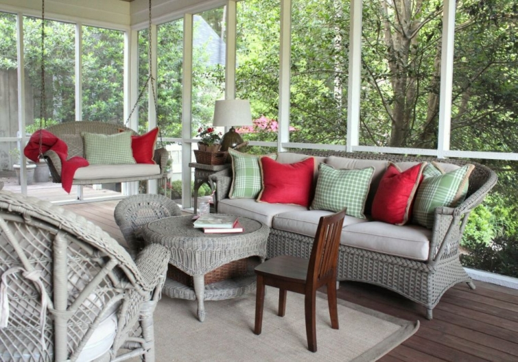
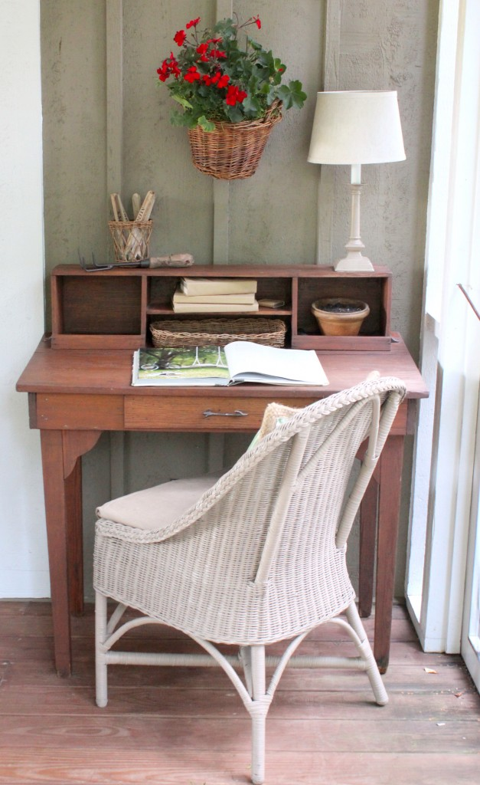

.png)
.PNG)
.PNG)
.PNG)
.PNG)
.PNG)
.JPG)
.JPG)
.PNG)
.PNG)


Yes, the red and green and geraniums (and a few strawberries) have made their way out to the porch in the form of pillows and plants. They work so well with the red umbrellas on the decks and all the green hollies growing there.

 The weather here on Saturday and most of Sunday was absolutely perfect, so much so that I wanted to have a picnic. ¬†But insects seem to enjoy munching on me, which made the porch a better option for this picnic. We set the table with a couple of geraniums (of course) and a few white enamelware plates that were purchased at Target loooooong ago – wish they would carry them again…I need more!
The weather here on Saturday and most of Sunday was absolutely perfect, so much so that I wanted to have a picnic. ¬†But insects seem to enjoy munching on me, which made the porch a better option for this picnic. We set the table with a couple of geraniums (of course) and a few white enamelware plates that were purchased at Target loooooong ago – wish they would carry them again…I need more!
I knew rain was predicted for Sunday evening, but I hadn’t really paid much attention to it. Then…when I had everything set up on the porch, there was a distant rumble of thunder, followed by a few closer… and closer…and then… BOOM! ¬†Lightning struck nearby and the sky opened up. ¬†The rain came in a heavy downpour, and wouldn’t you know it? I had just sent our son to the store to pick up the fried chicken! ¬†But then… it suddenly stopped, and the sun came out, and there was this. üôÇ
Can you see the rainbow in the photo? ¬†Isn’t that just amazing? It looks like it ends in the field next door (where our pot of gold is waiting. üôÇ )
So the rain stopped and we continued with our picnic on the porch.
I think I have mentioned to you before that when I was a little girl and our family would go on a vacation, my mother would always get up very early to fry chicken. ¬†We would take that chicken with us to have for a picnic at a park on the way (quite often near Gulf Shores, Alabama.) ¬†So when I think of picnic, I can’t help but think of fried chicken. (But I try my best to avoid frying it since I make such a monumental mess with it. üôÇ )
And because I am so ready for summer, I wanted this meal to be a little taste of the season to come….corn on the cob, watermelon, homemade ice cream. ¬†Don’t those foods just make you think of summertime?
Here is the recipe for my baked beans. Yes, that is 1 cup of brown sugar in them. ¬†(My daughter and I like them sweet. üôÇ )
I forgot to put potato chips and ranch dip (made from a seasoning packet and sour cream) on the chalkboard menu, but we had them on the table (4 small mason jars of the dip spread down the length of it.)
Here was my taste of summer plate… (Wings are my favorite!)
 And home made ice cream topped with fresh strawberries finished off our “picnic” meal.
And home made ice cream topped with fresh strawberries finished off our “picnic” meal.
Yum! ¬†Now are you in the mood for summer? ¬†I sure am. ¬†Last year I spent the first 2 weeks of my summer vacation working at the school moving into my new classroom, so I never really felt like I had a “summer.” ¬†Perhaps that is why I can’t seem to wait for its arrival this year. (Plus we will go back to work in July. üôÅ )
Thank you for so many sweet comments about all the red and green in the last few posts. ¬†There are a lot of geranium lovers out there! üôÇ ¬†Fingers crossed that I will pop in again with another post later in the week, but with the craziness as we finish the school year, I might not be able to get to it. ¬† Please be sure to come back next week though because I have a fun giveaway in store for you!
Have you made summer vacation plans yet?
We’d love to hear about them. üôÇ


.PNG)
Beautiful as always. Love the red & green combo, reminds me of Christmas but it’s not. üôÇ
I just love your blog. You are so great with decorating, recipes and everything that I get a lot of ideas.
I just wanted to let you know that I make the same baked beans recipe except tht I will put it in the fridge overnight to let all the ingredients marinate together. It is sooo good.
So inspired to have a nice picnic for upcoming holiday! Made my chalkboard menu and decorated the table already!! I am going to make your beans! My summer vacation plans include going to Orlando for a weekend to attend my daughter’s 31st class reunion and then in-turn, she is flying to KY with me to my 50th class reunion! Can you believe still have not turned on AC— so nice here on the lake this spring with windows open and ceiling fans keeping us cool! But this weekend– 95 degrees predicted — I’ll be ready to go to the mountains!!:)
I am glad this year has been a such a good one, I know you must be a wonderful teacher. My daughter has 2 1/2 weeks left and we leave for Emerald Isle the next day (June 7). I see that another reader, Jill, also vacations there. My husband’s family has gone there since he was little and we have been going since we were married 45 years ago.
I always love the photos of your meals, such inspiration! I like to make a meal an event.Well, maybe not an event, but special. I can appreciate all the time it takes to do the little touches you always do.
Hi Kelly- I am a new reader (so forgive me if this has been covered) and really love your blog, and have especially fallen for your porch posts. Could you talk more about the piece that you are using for a buffet- it has the fabric across the front. Did you make the fabric bit yourself and hang it? Is it on a rod? Would love to know more!
-Allison
Your porch picnic looked delicious all the way down to the homemade ice cream. We don’t eat much fried chicken here these days. Our choice is skinless chicken breasts that I marinade in Italian dressing for a couple of hours, then grill. I do love fried chicken, but it is just too messy to fry. Usually we buy if we want fried. Our bean recipe is very similar too. My recipe uses the same amount of brown sugar, but it calls for six strips bacon cooked and chopped. The onion is diced and saut√©ed in a little of the bacon grease and for some added flavor it calls for a 1/4 cup Worcestershire sauce. I think your Sunday picnic will be our Memorial Day fare with a add on of homemade potato salad, which I always make. Seeing your post tonight is making my mouth water. I had an impromptu picnic today with my daughter and the grandbabies. They were in the area and surprised me. We had turkey subs, chips and mandarin oranges. We ate on the deck. It was so humid and in the eighties today, but that didn’t keep us from chasing and kicking a ball in the yard afterwards until our faces were red. Oh, they are two active little peanuts. We have no vacation plans as of yet. We’ll have to see what the summer brings. I have to say with today’s weather, I think summer has officially arrived here in the Midwest. Happy summer vacation teacher Kelly! Looking forward to your summer posts. Always enjoy your blog.
Debra
Kelly, I hope this final week goes smoothly. Your menu is the very definition of all things summer. Then, you mentioned potato chips and ranch dip and I was immediately taken back to backyard BBQ’s of my youth. Yummy.
Karen
Wings are my favorite too! End of the year was always rough…we had to pack up a lot of our things each summer…..5k teachers have lots of stuff to store! I hope you gave a great summer.
Haven’t checked in for a while. Been working on the deck and screened in porch. Have read everything just to tired to type. I have never stained so much in my life. All done. Now to decorate. Hope it will come out as nice as yours. Love,love,love the geraniums, LOVE fried chicken, baked beans, strawberries and a picnic. Had a vacation to Florida planned at the end of this month to surprise my son for this 30th birthday but he surprised us with a phone call Friday night letting us know that he was being deployed on Sunday so he left Sunday and his birthday and our vacation will be put on hold until he returns back home. Some things in life are worth waiting for and this is one of them. Hope you get to enjoy your summer with many fun times and lots of outings. üôÇ
What a pretty porch and lovely spot for a picnic! Mentioning your childhood memory of picnics reminded me of my own. Many summer weekends my parents would load us kids into the car and drive…somewhere üôÇ We would stop at roadside stops where there were always picnic tables. Nothing else. No Sheetz or such things, just good ol’ picnic tables.
I’m anxious for summer also and your lovely post has me chompin at the bit!
Our summer vacation consists of many projects, both indoor & outdoor. There is nothing like having a summer wedding to get your act together!!
Enjoy your time off from school~
I love your porch, it is so fabulous and your tablescape is perfect. The red geranimums are the perfect color. Dinner looks amazing too. Thanks for the recipe for the beans, they sound fabulous.
Hi Kelly
I haven’t had the opportunity to send a post your way for some weeks now, but I have enjoyed reading & seeing all. Just a few items to mention…It isn’t summer to me without fried chicken eaten outdoors, a few mosquitos,red geraniums,loads of strawberries, and all the anticipation of school’s out. BTW, the child size library chair that you have on your porch is too cute!
Kelly,
Your porch picnic looks perfect to me. This is our last week of school also. Yippy! For vacation this year I think we are just going to stay at the lake house for two weeks. There are plenty of things to do at the Lake of the Ozarks as well. We will visit the outlet mall and water park as well as just read and relax. good luck with your final days.
Oh, I love summery meals like this! Everything looks delicious, Kelly!
My daughter has 13 more days of school. Our kids are making up few days due to all of the inclement weather days we had this year. At the end of June, our extended family of 11 will travel to Emerald Isle, NC for a week of vacation. We are renting a house for all of us — and though we’ve gone to EI for years, this is a new house to us. It has a pool, which will be something new. My own family LOVES the beach, so I’m anxious to see how much the pool changes our typical beach vacation routine.
Just lovely Kelly, great ideas as usual. Well I’m off to Vancouver this morning for my nephews graduation ceremony. He is becoming a doctor. Have a great day!
Oh Kelly, it makes me happy to know this was one of your best years teaching!!!Love your “picnic” table and food.
This weekend my husband’s sister and her family are stopping here for two days on their way to a Sunday wedding in Charlotte. I am stealing your coke bottle idea for our Saturday lunch. The White Squirrel Festival ( our little town is full of them!) is all weekend to add to the fun…just realized the music stage and beer garden are set up one block from our house…beer garden????
My husband is kicking off his summer this week by going to the Southern Conference baseball tournament in Charleston ( I’m still trying to get over the fact he did not invite me!)Does Mercer have a good baseball team? WCU baseball won the regular season so we have high hopes!
In June I am doing a girl’s week in Rhode Island (woo hoo, Josie!) We are visiting Martha’s Vineyard, Boston, Newport, Cambridge etc..
Kelly,I know you did an awesome job in your first year math position! I am happy your summer break is right around the corner. Hope you get to stick a straw in a coke bottle and enjoy your gorgeous porch.
I am with you: I do NOT get up at the crack of dawn to fry chicken like my mother did — I guess all women used to do that. It makes me very cranky! Fried chicken comes from the nearest Publix!
Your baked beans are exactly the way my mother made hers, too.
Everything looks so pretty on your porch. I hope you get to have a good summer this year.
———————————————————————
Yay I am not the only slacker when it comes to frying chicken! I actually do fry chicken fingers, just not whole cut up chickens. Thank you for the compliments about the porch. We are enjoying that room so much with our mild temperatures this week.
Kelly
How awesome this picnic looked and when I can stop over for the next one?!
I have a recipe for Baked Beans that’s almost identical to yours. However, to the beans, I use: 1/2# bacon,cut into pieces, 1 green pepper, chopped, 1 Tbsp mustard, 1/4 cup molasses, 1/2 cup of brown sugar & 1/2 c ketchup. Fry bacon and saute green pepper. Add to beans in casserole along w/ketchup, mustard & brown sugar & mix well. Add molasses last & stir. Bake at 350 for 1 hr+ uncovered, til bubbles.
Enjoy your well-deserved vacation from the kids and the classroom!
———————————————————————-
Come on over DeeDee! There are always some beans left over for the next meal. Thank you for sharing your recipe. It sounds very good! I want to try pre-frying the bacon for ours next time to see what it does to the flavor.
Kelly
Mmmm….fried chicken! YUM! (Why does fried food have to taste so good?) Your menu sounds so delicious….and definitely summery. Our kids are out of school the first week of June. Time is flying by and we are crazy busy with all of the end of the year activities. I have two trips planned. Next week I go with my son’s 8th grade class to Washington, DC for four days. Not sure how much of a vacation that will be, but it’ll be fun. And at the end of June we are going with my whole family to the beach at Emerald Isle, NC. Can’t wait!
————————————————————————
I chaperoned a DC trip once for high schoolers…definitely not a vacation, but still fun. Now your Emerald Isle one sounds like Heaven! I know you are looking forward to that one Jill. üôÇ
Kelly
Kelly,
I’m so glad you had a good year at school–I’ve been wondering how the new teaching assignment worked out for you. This is the FASTEST a school year has gone for me–tomorrow is our last full day with kids! I still have so much to do…
Great minds must think alike–I was hungry for chicken, potato salad, and baked beans Sunday evening, too! I make my beans the same way (in fact, that was the only thing I made…everything else came from the deli!)What a great way to kick off the week!
I love that last picture…I just tripped over an identical pair of shoes in my living room. üôÇ Enjoy your week!
———————————————————————–
Congratulations on the start of your summer vacation so early! Glad you liked the last photo. I keep debating on painting that red chair a different color, but I just can’t seem to bring myself to do it. This weekend must have been a fried chicken Sunday (makes me think of the Patricia Polacco book, Chicken Sunday. üôÇ )
Kelly
Hi Kelly: Your pre summer picnic looks so inviting…especially the watermelon salad. Watermelon is my all time favorite food and it has been eluding me for the last year and a half. Haven’t had a good one for that long:-((( Maybe it’s due to the fact that we live in Ohio? Don’t know but your post made my mouth water! We just had our summer vaca last week. Went to Orlando with daughter and family. They went to Disney and we went to Seaworld and Legoland with them. The Legoland display is amazing!!!! Anyway, we stayed at the Bonnet Creek Resort and it was wonderful. We got blessed beyond measure by being able to stay in the Presidential Suite because of someone’s mistake. It was beautiful. We came home tired but full of precious memories we will take with us for a lifetime. Thanks again for the wonderful post and the promise of a sweet taste of watermelon on the horizon…..maybe:-)))
————————————————————————-
You have already had your summer vacation? Wow Gail! And how lucky you were able to stay in the Presidential Suite at Disney. My Disney crew here is very jealous! If you have just returned from there you ARE tired. üôÇ I hope you get to enjoy some watermelon very soon. I just read an article about how good it is for you. So besides its yummy taste, it is also making you healthier. How’s that for making you feel good about what you eat?!
Kelly
Hi Kelly, Everything looks perfect, even your rainbow! Love all the touches of red.
——————————————————————-
Thank you Anne. I totally planned that rainbow! LOL The red is here to stay for the summer.
Kelly